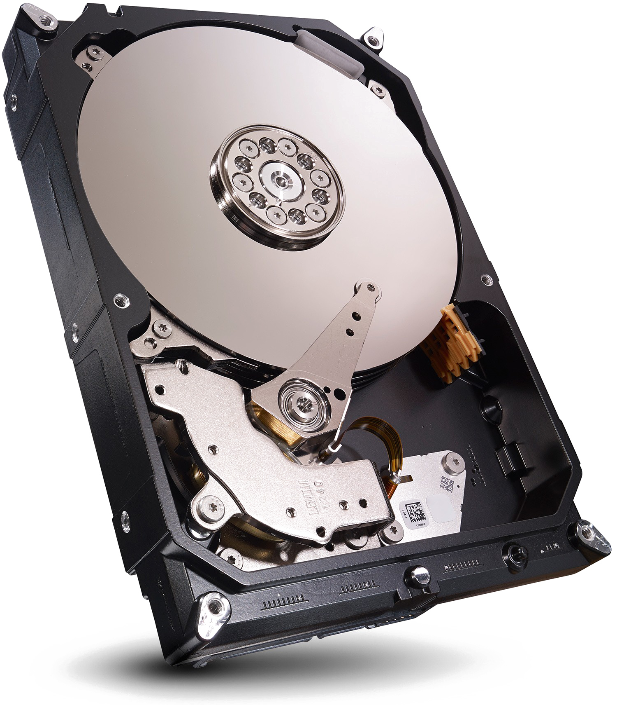

Como funciona um HD?
O HD é composto por discos magnéticos revestidos, nos quais os dados são organizados em trilhas, setores e cilindros. Uma cabeça de leitura/gravação, montada em um braço móvel, lê e grava dados nesses discos. O HD gira constantemente a alta velocidade, criando um fluxo de ar que mantém as cabeças próximas à superfície dos discos. Quando dados são armazenados ou acessados, as cabeças movem-se para a posição correta e, em seguida, leem ou escrevem os dados na superfície magnética do disco.


O que é um SSD?
Um SSD, ou Solid-State Drive, é um dispositivo de armazenamento de dados que utiliza memória flash para armazenar informações digitalmente. Diferentemente dos discos rígidos tradicionais (HDs), que usam discos magnéticos giratórios, os SSDs não possuem partes móveis. Em vez disso, eles armazenam dados em microchips de memória NAND flash, semelhantes aos utilizados em unidades USB. Eles possuem uma velocidade no mínimo 10 vezes superior a de um HD convencional.
 Desvendando a Tecnologia
Desvendando a Tecnologia